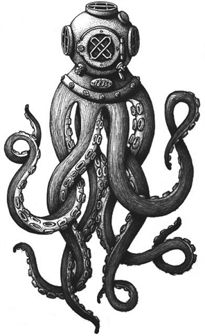

TRANSE
" Il y a des gens qui dansent sans entrer en transe et il y en a d'autre qui entrent en transe sans danser. Ce phénomène s'appelle la Transcendance et dans nos régions il est fort apprécié. " Jacques PREVERT

Nous pouvons définir la transe comme un état de conscience qui se trouve provisoirement modifié par un élément de contexte qui s’impose à une personne, et qui vient modifier soudainement la perception que cette personne a de la réalité. Cette modification est perçue par le sujet comme inhabituelle en nature et/ou intensité ; elle peut être le fait d’un événement particulier inattendu ou être le fait d’un événement anticipé et ritualisé, comme une rencontre thérapeutique impliquant une pratique telle que l’hypnose.
La transe est un état de conscience modifié qui inclus un élément de brusquerie. Autrement dit, un événement qui fait perdre les points de repères habituels du sujet en bousculant ses sens (sa façon de percevoir la réalité), le plongeant dans un ressenti inhabituel, atypique, et transitoire. Cet événement peut être soudain ou anticipé, unique ou répété, relever de circonstances normales ou pathologiques. Dans tous les cas, c’est le sujet lui-même qui peut décrire l’état de transe dans lequel il est plongé.
Ethymologiquement, le terme transe est de la même famille que le verbe transir, qui signifie partir, passer, s'écouler. La transe est un état de conscience impliquant une sensation de dédoublement ou encore d'un vécu spécifique et singulier.
Si nous portions en permanence un casque à électrodes qui mesure l'activité électrique de notre cerveau (électroencéphalographie), nous observerions que l'on traverse, chaque jour, de multiples états de conscience, chacun correspondant à l'émission d'ondes cérébrales différentes, d'une gamme de fréquence particulière (en hertz). Lorsqu'il est en veille active, notre cerveau émet surtout des ondes rapides, dites bêta (de 12 à 30 Hz), avec l'apparition d'ondes gamma spécifiques (vers 40 Hz) lors d'une activité intellectuelle et mentale (intense). Alors qu'en relaxation légère ou éveil calme (assis dans son canapé yeux fermés par exemple), ce sont des ondes alpha (de 8 à 12.Hz) qui dominent. Les ondes thêta (4 à 8 Hz) correspondent, elles, à la relaxation profonde, la méditation ou encore la transe hypnotique et à un certain type de sommeil (paradoxal). Enfin, en sommeil profond, les ondes majoritaires sont de type delta (de 0,5 à 4 Hz).
Ce large éventail d’états de conscience, modulés par les ondes cérébrales, peut modifier les perceptions. Parfois, le changement est involontaire et rapide. On peut se mettre en hypnose spontanée et avoir l’impression de sortir de son corps, de ne plus sentir de douleur, d’être dissocié. Et ce "débrayage" cérébral peut également être provoqué techniquement, notamment par le principe de la suggestion.
La transe est un état de conscience modifié qui inclus un élément de brusquerie. Autrement dit, un événement qui fait perdre les points de repères habituels du sujet en bousculant ses sens (sa façon de percevoir la réalité), le plongeant dans un ressenti inhabituel, atypique, et transitoire. Cet événement peut être soudain ou anticipé, unique ou répété, relever de circonstances normales ou pathologiques. Dans tous les cas, c’est le sujet lui-même qui peut décrire l’état de transe dans lequel il est plongé.
Ethymologiquement, le terme transe est de la même famille que le verbe transir, qui signifie partir, passer, s'écouler. La transe est un état de conscience impliquant une sensation de dédoublement ou encore d'un vécu spécifique et singulier.
Si nous portions en permanence un casque à électrodes qui mesure l'activité électrique de notre cerveau (électroencéphalographie), nous observerions que l'on traverse, chaque jour, de multiples états de conscience, chacun correspondant à l'émission d'ondes cérébrales différentes, d'une gamme de fréquence particulière (en hertz). Lorsqu'il est en veille active, notre cerveau émet surtout des ondes rapides, dites bêta (de 12 à 30 Hz), avec l'apparition d'ondes gamma spécifiques (vers 40 Hz) lors d'une activité intellectuelle et mentale (intense). Alors qu'en relaxation légère ou éveil calme (assis dans son canapé yeux fermés par exemple), ce sont des ondes alpha (de 8 à 12.Hz) qui dominent. Les ondes thêta (4 à 8 Hz) correspondent, elles, à la relaxation profonde, la méditation ou encore la transe hypnotique et à un certain type de sommeil (paradoxal). Enfin, en sommeil profond, les ondes majoritaires sont de type delta (de 0,5 à 4 Hz).
Ce large éventail d’états de conscience, modulés par les ondes cérébrales, peut modifier les perceptions. Parfois, le changement est involontaire et rapide. On peut se mettre en hypnose spontanée et avoir l’impression de sortir de son corps, de ne plus sentir de douleur, d’être dissocié. Et ce "débrayage" cérébral peut également être provoqué techniquement, notamment par le principe de la suggestion.
Ainsi, la personne en transe hypnotique peut observer certains phénomènes comme si ils se produisaient d’eux-mêmes, de manière automatique, sans pour autant y engager sa volonté consciente. On les appelle des phénomènes idéodynamiques et peuvent s'expliquer comme étant la traduction automatique, sans participation de la volonté de l’individu qui les expérimente, issues d’une idée, de mouvements, sensations, affects ou processus corporels.
En fonction du registre affecté par la représentation mentale, il s’agira de phénomène :
La transe hypnotique est donc une expérience intérieure, à chaque fois singulière et personnelle. En fonction de la "profondeur" de la transe vous vous sentez être déconnecté du moment et pourtant vous pouvez avoir l’impression de rester éveillé. Vous continuez à entendre tout ce que l’hypnotiseur vous dit et à tout moment, vous pouvez sortir de transe par votre simple volonté. C'est un état d'hyper concentration et en aucun cas un état de sommeil, ni de perte de contrôle.
En fonction du registre affecté par la représentation mentale, il s’agira de phénomène :
- Idéo-moteur : motricité ou inhibition (catalepsie) de celle-ci
- idéo-sensoriel : hallucination positive ou négative d’un des cinq sens
- idéo-affectif : ressenti émotionnel ou anesthésie émotionnelle
- idéo-somatique (psychosomatique) : douleur, analgésie ou activation/inhibition de processus corporels divers
La transe hypnotique est donc une expérience intérieure, à chaque fois singulière et personnelle. En fonction de la "profondeur" de la transe vous vous sentez être déconnecté du moment et pourtant vous pouvez avoir l’impression de rester éveillé. Vous continuez à entendre tout ce que l’hypnotiseur vous dit et à tout moment, vous pouvez sortir de transe par votre simple volonté. C'est un état d'hyper concentration et en aucun cas un état de sommeil, ni de perte de contrôle.
EN RELATION
DISSOCIATION
CONSCIENCES
IMAGINAIRE